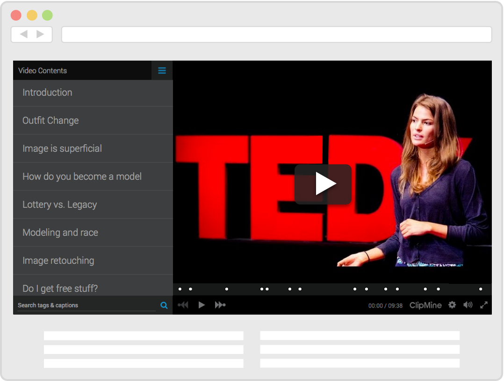
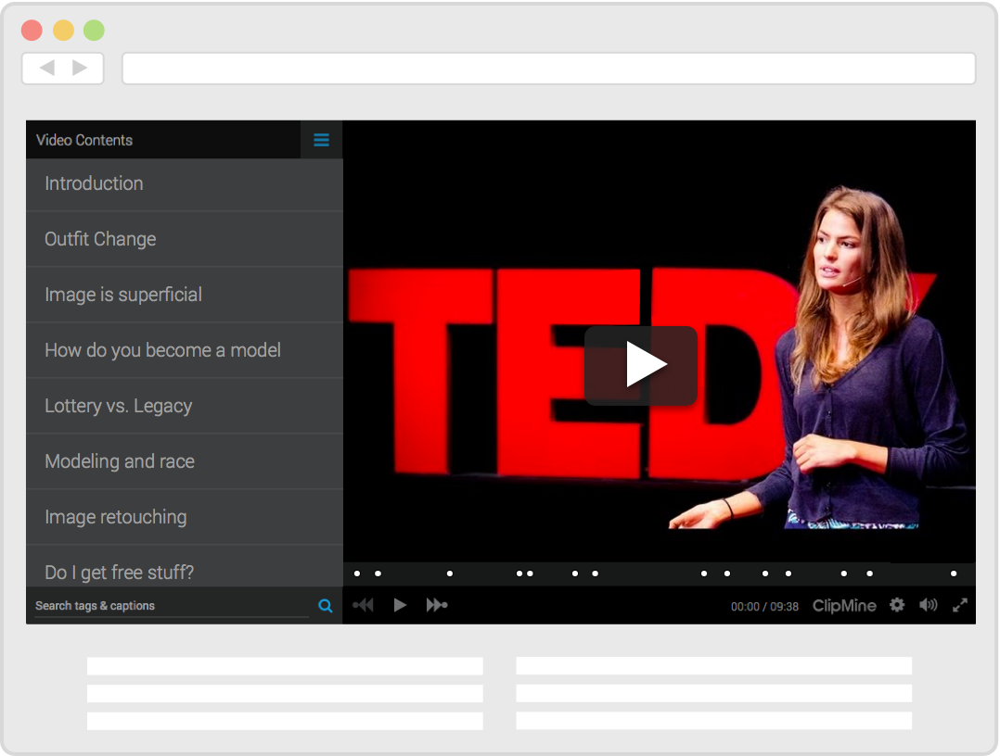

Meaningful Sharing
ClipMine works great for sharing and embedding recorded video game session, tutorials, product reviews, talk shows, speeches, lectures, and sport coverage.Tryout more samples

Interactive Embeds
Want to enable the ClipMine experience on your blog or Twitter feed? Just embed our Content-aware Video Player. It is responsive and built to work across different modern browsers and devices. Start by tagging a video of your choice or pick an already tagged one and simply paste the embed code into your website.

Smart Tagging
Found an interesting point in a video?On ClipMine, adding tags is not reserved for the video owners only - any community member can do it. In addition, our smart algorithms can automatically suggest tags (in private beta) for a wide variety of videos!
 


 4 people tagged
4 people tagged